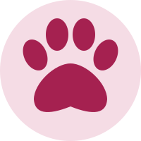

Уточни деталі
Зателефонуй і запитай про години роботи, вартість, вікові обмеження та потребу в бронюванні. Ми не приймаємо бронювань на цьому сайті.
03 / КОНТАКТИ
Хочеш поспілкуватися з котиками наживо? Нижче — мапа та контакти котокафе «Хвостики», наведені в нашому навчальному проєкті.
Мапа й телефон ↓
ПЛАНУЄМО ВІЗИТ
Зателефонуй і запитай про години роботи, вартість, вікові обмеження та потребу в бронюванні. Ми не приймаємо бронювань на цьому сайті.
Відкрий Google Maps за кнопкою під мапою. Перед поїздкою перевір актуальну адресу на сторінці самого закладу.
Послухай працівників кафе, дай котикам звикнути та поважай їхній відпочинок. Нехай знайомство буде приємним для всіх.
«Мур» — неофіційний навчальний сайт. Актуальні умови відвідування повідомляє котокафе «Хвостики». Для завантаження мапи потрібен інтернет.
МАЛЕНЬКЕ НАГАДУВАННЯ
Найприємніші зустрічі трапляються тоді, коли всі почуваються комфортно.
Уточни правила фотографування у працівників. Не заважай котикам та іншим відвідувачам.
Якщо котик хоче відійти, дозволь йому це зробити. У нього теж можуть бути власні плани.